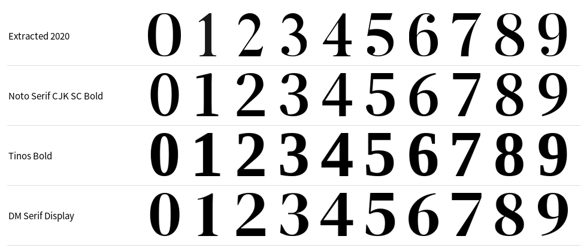
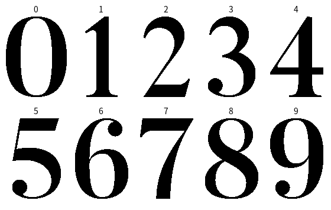

2026-11-03 · 本地研究与可运行原型 · 400 × 600 竖屏
2020排版研究
与Tr2e离线日历样稿
离线选排同年去重小字号落款 Tr2e
已完成原版版式研究、日期数字点阵提取、离线历表、年度内容选排及400×600样稿。研究样稿及主机生成器已完成；独立日历固件已编译通过，尚未烧录或做实体墨水屏验收。个人特殊日期只影响内部选句，画面不标生日或结婚纪念日。
2020年的常规版式
抽查37张原图，覆盖每月15日、年初年末、闰日、4月1—10日数字样本和部分特殊版。常规页的结构稳定：细横线与日期信息、黑色矩形框、大日期数字、大量留白、宜忌标题、横线、选句、作者与出处、右下落款。以下为691×1006常规原图的近似测量，不是全年366张逐像素普查。
| 元素 | 原图常规位置 / 特征 | 400×600样稿 |
|---|
| 上方日期栏 | 顶线y≈64；左侧月日为粗衬线体；星期与农历为黑体；右区两行 | 顶线y=38；月日31px，星期/节气/农历13px；农历使用本地历表 |
| 主框 | x≈35—655，y≈156—970；约3px线宽 | x=20—379，y=94—579；2px框线 |
| 日期数字 | 字面约y=259—486；高反差衬线体，3/5/6/9有球形端点，4/7细笔画明显 | 常规字面高136px；双位数按比例组合；长句版适当缩小 |
| 宜忌标题 | 约y=559—607；粗宋/明体，居中 | 30px粗宋体，按字宽居中，必要时两行 |
| 选句 | 横线y≈693；正文y≈718起，约31px，行距约48—50px | 常规22px/29px行距；长句19px，少数18px；不删字、不改写 |
| 作者、出处、落款 | 底线y≈906；正文下方小字，右侧品牌 | 作者13px、外文11px、出处12px；落款Tr2e为14px常规字重 |
1月1日的外框与数字位置不同；7月2日采用“1/2”半年度特殊版；8月30日含彩色联名图形；10月19日及21日出现文学节英文特别版。它们不应混入常规数字字体。原版的留白是设计的一部分，因此样稿先保留留白，只有内容较长时才向上扩展正文区。
37张样本原图链接及证据
2020-01-01 · 2020-01-02 · 2020-01-15 · 2020-01-31 · 2020-02-01 · 2020-02-15 · 2020-02-29 · 2020-03-15 · 2020-04-01 · 2020-04-02 · 2020-04-03 · 2020-04-04 · 2020-04-05 · 2020-04-06 · 2020-04-07 · 2020-04-08 · 2020-04-09 · 2020-04-10 · 2020-04-15 · 2020-05-15 · 2020-06-15 · 2020-07-01 · 2020-07-02 · 2020-07-15 · 2020-08-15 · 2020-08-30 · 2020-09-15 · 2020-10-15 · 2020-10-18 · 2020-10-19 · 2020-10-20 · 2020-10-21 · 2020-10-22 · 2020-10-23 · 2020-11-15 · 2020-12-15 · 2020-12-31
尺寸、来源URL与SHA-256
现成字体与数字提取
对系统字体和下载的开放字体共748个字面/变量设置做了数字轮廓筛查。最高平均重叠约0.736，仍不足以确认原字体；这里只能判断相似风格。指标先把各数字字面缩放到相同宽高再算二值轮廓IoU，不能当作“字体识别置信度”，也不能说明自然字距相同。
中文标题与正文可用Noto Serif CJK SC的粗体/常规体，星期农历用Noto Sans CJK SC。日期若用现成字体，Tinos Bold、DM Serif Display能提供接近的衬线风格，但2、3、5、7的轮廓仍有明显差别。当前样稿直接采用提取数字；Tinos的小子集用于外文作者姓名补字。

依次为原图提取、Noto Serif CJK粗体、Tinos粗体、DM Serif Display；按字面高度展示。
4月1—10日提供了干净的0—9字形。原始字面高度约226px，缩到136px足够。已生成10张灰度母版、标准BDF和1bpp二进制字库：固定104×144单元，单字1872字节，总计18,720字节。这是只有数字的点阵字库，不是补全的矢量字体。不同长句版仍从同一母版缩放；设备端可缓存相应字号。

BDF字体 · 字形来源与裁切坐标 · 完整字体筛查结果
岁末年初与农历节日
用12月26日—1月7日作为观察窗口，现有有效宜忌页的统计如下。这个边界是本次产品默认值，不代表原编辑曾公开固定采用同样日期。
| 范围 | 有效页 | “宜”标题 | 迎新/希望相关词 |
|---|
| 12/26—1/7 | 135 | 96（71.1%） | 21（15.6%） |
| 其余日期 | 3772 | 2557（67.8%） | 289（7.7%） |
关键词包含新年、新生、开始、重新、明天、未来、希望、祝福、幸福。窗口中这类表达更集中，支持“岁末迎新有主题倾向”的观察；但关键词不等于积极情绪。“宜辞旧迎新”的选句也可能谈死亡，所以新日历不靠标题或关键词直接判定温暖与否。
新增规则使用逐条阅读筛出的内容池：公历12/26—1/7偏向希望、祝福、重新开始和积极回望；农历腊月廿八至正月初七偏向团聚、归乡、相伴和迎新。先给这些日期保留内容，再分配日常页。当前积极池23条，春节池含8条家庭主题加积极池；原文保持不变。
除夕按“下一天是春节”识别，不能固定为腊月三十。元宵、端午、七夕、中秋、重阳使用各自农历月日和独立内容池；闰月不重复触发。夏至、清明等节气按本地表逐年查询。2020年国庆与中秋重合时，当前规则优先农历主题。
离线、特殊日期与全年不重复
优先级为：个人特殊日期 → 春节窗口 → 公历岁末年初 → 农历节日 → 公历节日 → 已核实作者生卒纪念日 → 节气 → 日常。个人日期的含义只保存在选排规则中，页眉不会写生日或结婚纪念日；夏至仍作为正常节气显示。11月11日不会按购物节或光棍节选材。不推断年龄与周年数。
离线数据包含现有3959页有效来源，3877条可选记录。去重先规范化Unicode和标点，再合并高相似选句；一年内同一内容组和完整标题均只用一次。不同日期、不同标题但选句相同，也算重复。内容不足时明确报错，不以重复或无关内容补位。已保存的年度计划禁止静默改写，重启和重复生成不会换掉同年安排。
已核实的作者生卒日只覆盖既有研究中的26个身份，不给其他作者猜日期。普通日仍以关键词标签和多样性分数选排，尚不等于成熟编辑逐篇审阅；原始文本也有未完成的OCR复核项。当前9条已知破损文本不参与选排。近似去重不能保证识别一切严重OCR变体或语义改写。
香港天文台1901—2100年公农历表已压成146,114字节的本地二进制表，时区UTC+8；运行时不联网、不调用在线模型。超过支持范围会报错。天文台说明部分远期、接近午夜的朔日或节气仍可能存在一天差异，表的来源与哈希均保留以供更新。
400×600实际输出
点击图片可看原尺寸PNG。所有页都使用黑白二值文字，无彩色抖动；每张还输出30,000字节的1bpp帧缓冲。页脚最终统一为小字号“Tr2e”。
验证与PaperColor落地边界
9项测试覆盖：2026年365天与2028年366天去重、稳定重放、年度文件保护、私人日期优先且不显示私人标签、夏至日期变化、农历节日与闰月、1901—2100整表结构一致性、源文件哈希以及排版完整性。全部3877条候选文本可排入：常规2020条、平衡1685条、长句170条、小字号长句2条。未发生文本截断。
电脑端生成器与独立日历固件分别保留。PaperColor分辨率400×600，配备RTC与microSD；现有仓库已有PNG上传/本地照片显示通路，样稿可沿这条通路先验证字体与线条。独立固件已实现内置资源、年度保护、RTC日期驱动、跨年切换和15天按需校时，不依赖SD卡；设备尚未上机验证。详情见独立固件报告。
存储预算：数字常规字库约18.3KiB，单张黑白画面约29.3KiB；全年365张未压缩黑白画面约10.44MiB。主机字体子集约3.7MiB、内容目录约2.2MiB；独立固件把必要字形和排版指令压成约1.85MB资源，直接内置，不需要存放原图年库。先在Color验证，再复用数据与规则；本次不扩展DIY屏幕规格。
2026全年选排追踪（365天）
“显示标签”只含公开日期信息；内部私人含义不在此列展示。来源日期与显示日期分开保存。
运行与资源说明 · 内部选排配置 · 完整年度计划 · 排版统计